How I used Google Docs as a CMS for a Blog Style Website
I was assigned the task of building a newspaper/blog website for my school. The current website is built with Wix and is not responsive at all. It's also a genuine eyesore to look at.
I decided I needed a CMS to get the rest of the team to be able to write content. I decided I wanted something universal and simple like a folder filled with markdown or html files. I didn't want to force the writers to use markdown or html, however, the main thing I wanted to avoid is having to manually copy paste content from Google Docs into a markdown/html file and then re-format everything. I then had a realization: What if you can generate a website straight from Google Docs? It sounded like the perfect plan. I could download all the docs, convert them all to a website format like html or markdown, and then I could just piece every individual article together. Enter Mammoth.js
Mammoth.js is a library that allows you to convert a .docx file into a .html or .md. Unfortunately markdown is now deprecated. I decided html was still better than the alternatives. I wrote a node.js script that recursively converts all the .docx files to .html. Now I had a pipeline that could take me from a zip file of the Google Drive with all the content, all the way to html content for the website.
This is what we have so far:
The Google Drive folder is downloaded as a zip, extracted, and recursively converted into html files.

I realized I needed a framework or tool to piece together all of these dangling html files. Enter Eleventy. Eleventy seemed to be the perfect tool for the job. When I first started looking at using Eleventy, I was hesitant because I didn't like the idea of having Nunjucks as my main template language. I eventually decided to use it anyway, because so many awesome looking and popular websites have succeeded with it.
I made myself some testing content and built out a skeleton of a website that I was happy with. With some Eleventy magic, I managed to get a fully functional website complete with sections, article pages, a navbar, a footer, etc. You can check the GitHub out here.
The next step was automating this entire process. I set up a GitHub action that runs my conversion script, then exports the Eleventy website and then pushes the final result to a GitHub pages website! Now every time I commit a change to the repository, a new website will completely automatically be generated.
What I learned
Using a Jamstack was the way to go for this project. It made building the site enjoyable and quick. In this project, I learned about CI/CD pipelines and Eleventy.